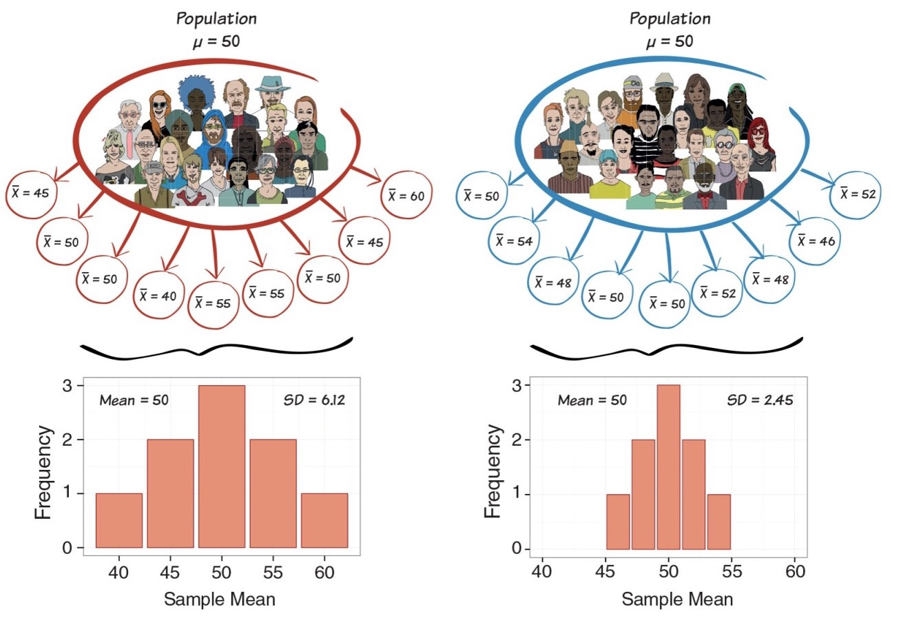
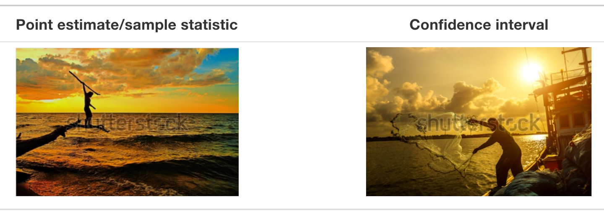

ggplot(virtual_prop_red, aes(x = prop_red)) +
geom_histogram(binwidth = 0.05, boundary = 0.4, color = "white") +
geom_vline(xintercept =.37, colour="green", linetype = "longdash")+
labs(x = "Proportion of 50 balls that were red",
title = "Distribution of 10,000 proportions red") Statistical Inference: Populations, Sampling Distributions, and Uncertainty
Princeton University
Where are we going?
Today:
- Sampling distributions
- Uncertainty (confidence intervals, margin of error)
Monday:
- Null hypothesis significance testing (p-values, null hypotheses)
Packages
Population
Entire collection of units interested in studying
- Clearly defined
- Typically large
Sample
Smaller subsets of population

Statistical Inference

Estimation
Parameters and Statistics
Parameter
- Characteristics of the population
Statistics: Estimates of population parameters
- This is a random variable! We can create a sampling distribution from this
Activity - Sampling Distributions
There is a large bowl of balls that contains red and white balls. Importantly, we know that 37.5% of the balls are red
What proportion of this bowl’s balls are red?
Pull a random sample of 10 5x
Tell me how many of reds you pulled from each sample (prop)
- Enter in Google sheets document https://docs.google.com/spreadsheets/d/18aXkkXOrUiulmCibtEQuVP36UsmdBWQ5AQZqv-oXQ4c/edit?usp=sharing
Activity - Sampling Distributions
Activity - Sampling Distributions
There is a large bowl of balls that contains red and white balls. Importantly, we know that 37.5% of the balls are red
What proportion of this bowl’s balls are red?
Pull a random sample of 50 5x
Tell me how many of reds you pulled (prop)
- Enter in Google sheets document https://docs.google.com/spreadsheets/d/18aXkkXOrUiulmCibtEQuVP36UsmdBWQ5AQZqv-oXQ4c/edit?usp=sharing
Activity - Sampling Distributions
10,000 times
10,000 Times
Key points
Two samples from the same population will tend to have somewhat different means
Conversely, two different sample means does NOT mean that they come from different populations
The variance of the sampling distribution of means gets smaller as the sample size increases
Mores samples give better estimate of population mean
Sampling Distribution
The probability distribution of a given statistic (e.g., mean) taken from a random sample
- Distribution of statistics (e.g., mean) that would be produced in an infinite repeated random sampling (with replacement) (in theory)
IMPORTANT: Can be any statistic (proportion, mean, standard deviation)
Constructing Sampling Distribution
Randomly draw n sample points from a finite population with size N
Compute statistic of interest
List different observed values of the statistic with their corresponding frequencies
Properties of Estimators
Unbiased
- Parameter value = estimate from sampling distribution
Efficient
- More precise
Consistency
- Sampling distribution becomes narrower if we increase sample size
Example: Sampling Distribution of the Mean
- Scores on a statistics test
Sampling Error (Standard Error)

Sampling Error (Standard Error)
How certain are we that our estimate represents the mean of the population?
Say it with me: The standard deviation of the sampling distribution is the standard error
It tells us how much variability there is between sample estimate and population parameter
\[SEM = \sigma/\sqrt(N)\]
SEM
- What does smaller SEM tell us about our estimate?
- Estimate is likely to be closer to population mean

Sampling Distributions
Note
Sampling distributions are theoretical, and the researcher does not select an infinite number of samples. Instead, they conduct repeated sampling from a larger population, and use the central limit theorem to build the sampling distribution
A Tale of a Theorem and a Law: Magic
Central Limit Theorem
Properties:
The distribution of the sample mean approaches the normal distribution as the sample size increases
The standard deviation of the sampling distribution will be equal to the SD of the population divided by the square root of the sample size. s= \(\sigma/\sqrt(n)\)
Important: about the shape of distribution
Central Limit Theorem
Why is the Central Limit Theorem so important to the study of sampling distribution?
Kicks in regardless of the distribution of the random variable
We can use the normal distribution to tell us how far off our own sample mean is from all other possible means, and use this to inform decisions and estimates in null hypothesis statistical testing
Central Limit Theorem
Certain conditions must be met for the CLT to apply:
Independence: Sampled observations must be independent. This is difficult to verify, but is more likely if
- Random sampling / assignment is used
Sample size / skew: Either the population distribution is normal, or if the population distribution is skewed, the sample size is large (> 30)
- The more skewed the population distribution, the larger sample size we need for the CLT to apply
Real Data
data("gapminder", package = "dslabs")
gapminder_2015 <- gapminder %>%
filter(year == 2015, !is.na(infant_mortality))
ggplot(gapminder_2015) +
geom_histogram(aes(x = infant_mortality), color = "black") +
xlab("Infant mortality per 1,000 live births") +
ylab("Number of countries")
R Simulations
library(infer)
library(cowplot)
sample_5 <- rep_sample_n(gapminder_2015, size = 5, reps = 10000) %>%
group_by(replicate) %>%
summarise(mean_infant_mortality = mean(infant_mortality)) %>%
mutate(n = 5)
sample_30 <- rep_sample_n(gapminder_2015, size = 30, reps = 10000) %>%
group_by(replicate) %>%
summarise(mean_infant_mortality = mean(infant_mortality)) %>%
mutate(n = 30)
sample_100 <- rep_sample_n(gapminder_2015, size = 100, reps = 10000) %>%
group_by(replicate) %>%
summarise(mean_infant_mortality = mean(infant_mortality)) %>%
mutate(n = 100)
all_samples <- bind_rows(sample_5, sample_30, sample_100)Larger N Equates Better Normal Approximation
Law of Large Numbers
Law of large numbers (LLN)
- Implies that sample average \(\bar{X_n}\) will better approximate \(\mathbb{E}[X]\) as sample size increases
Super powerful: can be applied in most settings without knowledge of the underlying probability distribution
The Law of Large number justifies the use of Monte Carlo simulations
- Repeat simulation trials many many times and take the mean of these trials
IMPORTANT: about the mean
Measuring Uncertainty
From a point estimate to an interval
Mean and SEM are point estimates
What if we could create an interval that we are “reasonably confident†contains the true population mean?
Estimation Error and MOE
MOE (margin of error)
- Largest likely estimation error
\[MoE = 1.96 X SE\]
- Where did 1.96 come from?
Estimation Error and MOE

Combining Estimates Precision
CIs
Range of values that are likely to include the true value of the parameter
Allows us to provide point estimate with precision (SE)

Anatomy of a Confidence Interval
Public support for Proposition A is 53%
- 53% support, 95% CI [51, 55]

CIs - Activity
https://seeing-theory.brown.edu/frequentist-inference/index.html#section2
- Start with a normal distribution to sample from
How do the lengths of the confidence intervals change with sample size?
With confidence level?
CIs
- Sample size

CIs
95 is referred to as confidence level
- i.e., How confident CI includes \(\mu\)
Does not only have to be 95!
- Greater C = longer CI

How to Calculate CIs
1. Calculate the estimate from your sample
2. Calculate the standard error of your estimate
3. Determine the appropriate sampling distribution for your standardized estimate (e.g., normal)
- Determine your desired level of confidence (e.g. 90%, 95%, 99%)
- Lower boundary = estimate - MoE (1.96 X **SE**)
- Higher boundary = estimate + MoE (1.96 X **SE**)
\[ \bar{x} \pm 1.96 \dfrac{\sigma}{\sqrt{n}}. \]
CI Interpretations
There is a 95% probablity that our interval includes the true population mean
. . .
- Nope! Frequentist CIs are often misinterpreted
CI Interpretations
- https://seeing-theory.brown.edu/frequentist-inference/index.html#section2
CI dance: One from the dance (most likely captures the parameter we are estimating, but it could not)
- General interpretation: They tell us if I collected a 100 samples in an identical way, and for each of them calculated the mean and CI, then we would expect 95% of these samples to contain true mean
CI Interpretations
2. Precision: MoE gives us a sense of precision
- Prediction: CIs give useful information about replication
- E.g., If a replication is done, 83% chance (5 in 6 chance) 95% CI will capture the next mean
CIs and P-values
Note
We can use CIs to test the significance of the effect. If they do not include 0, we can usually say p < .05
What do we do when $\sigma$ unknown?
- USE \(s\) - SD of the sample
\[ Z(x) = \frac{x - \mu}{\sigma} \]
\[s = \sqrt{\frac{1}{N-1} \sum_{i=1}^N (x_i - \overline{x})^2}\]
The \(t\) Distribution
Small samples: more conservative test
t-distribution has fatter tails
Coverage is more conservative
N-1 is non-biased (not going to concern ourselves with the proof). We are taking sample SD instead of pop SD. It is going to be biased if we dont.
Degrees of Freedom
df = (N-1)
What is DF you ask?
- Number of separate independent pieces that can vary

Calculating CIs for \(t\)
\[ MoE = t_.95(df) \times s/\sqrt(N) \]
Candy Experiment Revisited
- Let’s calculate a confidence interval for the candy experiment
Candy Experiment Revisited
- Empty model
Candy Experiment Revisited
- Let’s get the means for each condition
Candy Experiment Revisited
- Let’s calculate our CIs
Write-up
- 95% CI [lower, upper]
People who completed the statistics test scored *M* = 75.00, 95% CI [70, 80], which was higher than those who completed it as themselves, *M*= 50.00, 95% CI [35, 65].
Summary
Confidence intervals quantify uncertainty about our estimates of the population mean based on a sample
- Captures precision of the sampling process, not about our beliefs about the value of the true population parameter
Encourages thinking about plausible range of values instead of a point estimate
Larger samples, populations with smaller variances, and lower confidence levels lead to smaller intervals
Footnotes
Cumming & Calin-Jageman: Introduction to the New Statistics↩︎